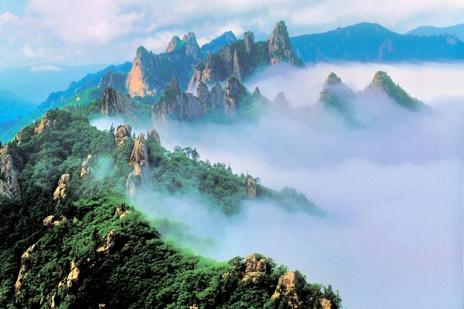
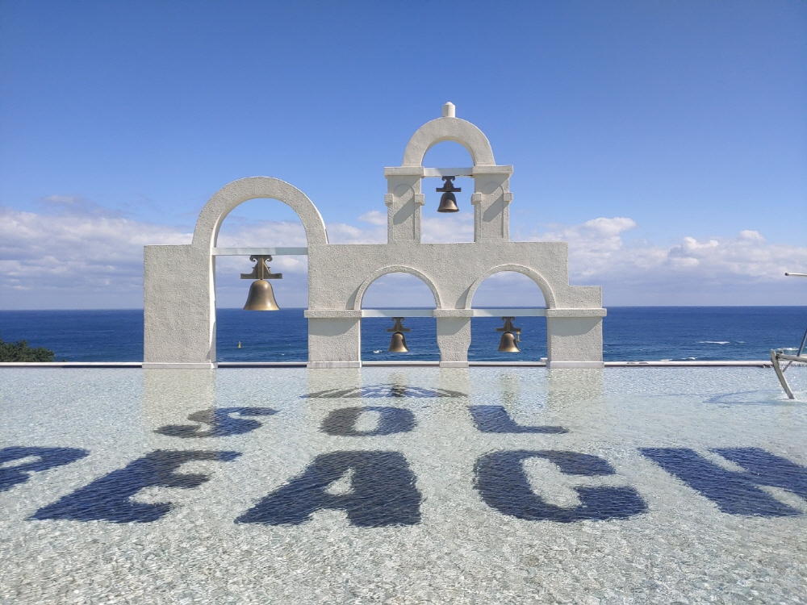
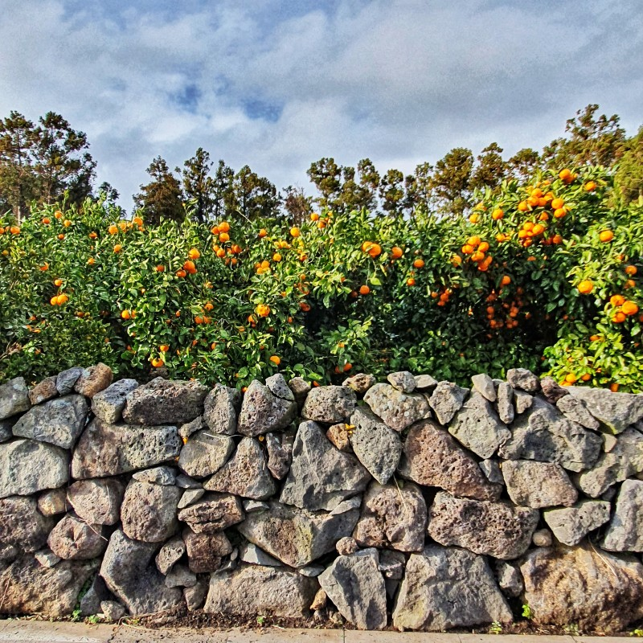
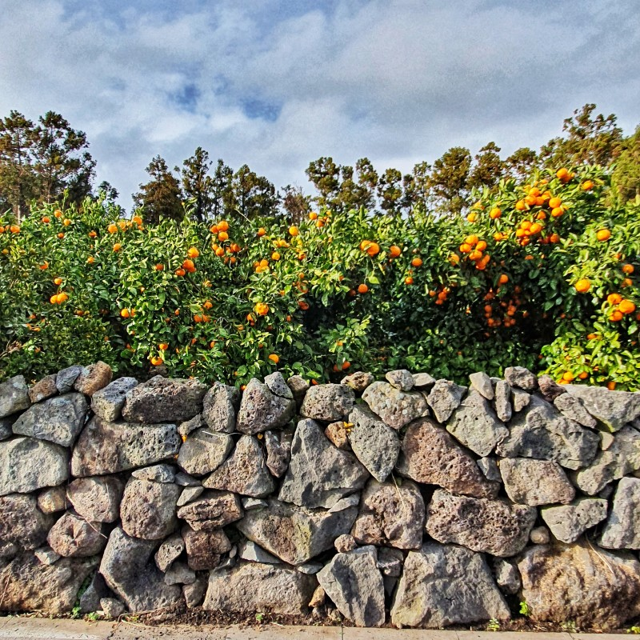

G A N G W O N
" 강원도 "
서울의 화려한 불빛과 소음에서 벗어나 기차를 타고 쉽게 도착할 수 있는 강원도로 향해 보세요. 강원도에는 아름다운 산과 한적한 국립공원이 있습니다. 강원도는 4계절 내내 관광하기에 아름다운 지역입니다. 봄여름에는 화려하게 핀 야생화와 함께 이곳의 자연을 감상하실 수 있고, 겨울에는 새하얀 눈으로 뒤덮인 산봉우리의 절경을 구경하실 수 있습니다.
 

J E J U
" 제주도 "
초현실적인 매력을 품은 화산섬 제주도는 오랜 역사를 자랑하는 마을, 곳곳에 산재한 아름다운 자연, 독특한 박물관 등 보고 즐길거리가 무궁무진한 곳입니다. 제주도의 하늘을 꾸며주는 한라산은 제주도 거의 어디서나 바라다보인다고 해요. 지리적으로 독특한 제주도는 자체의 고유한 농산물,특히 한라봉으로 아주 유명합니다.